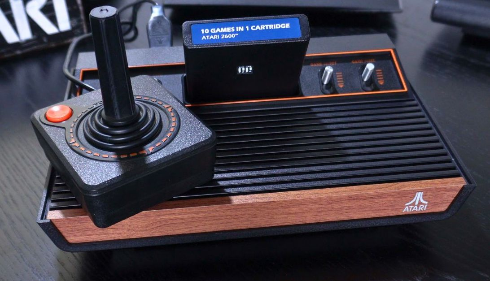

Atari 2600 (VCS)

Стационарная консоль Atari второго поколения.
История
В 1977 году Atari продала всего 250 тыс. экземпляров VCS. В 1978 году из 800 тыс. произведённых машин было продано только 550 тысяч, что потребовало дополнительных финансовых вливаний от Warner, чтобы покрыть расходы. Это привело к разногласиям, в результате которых основатель Atari Нолан Бушнелл покинул компанию.
Постепенно публика поняла, что можно играть во что-то более интересное, чем PONG, а программисты научились выжимать из приставки максимум возможностей, и тогда к 2600 пришла популярность. К этому времени Fairchild покинула рынок, решив, что видеоигры стали прошедшей модой — и тем самым отдав весь растущий рынок Atari.
Авторы статьи «Atari 2600» — Википедия, CC BY-SA 4.0.
Характеристики
- Производитель
- Atari
- Тип
- Стационарная консоль
- Поколение
- 2-е
- Год выпуска
- 1977
- Тип носителя
- Картридж
- Стартовая цена в США (1977)
- ≈ 199 $
- Цена в долларах 2025 года
- ≈ 1057 $